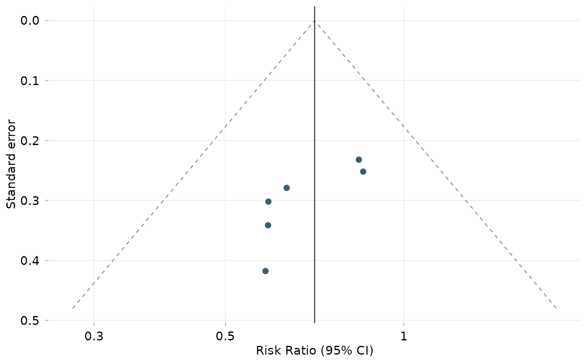

ggfunnel() draws a funnel plot: each study's effect estimate against its
standard error (a measure of precision), with pseudo confidence-interval
contours around the pooled effect. Asymmetry can signal small-study effects
or publication bias. Like ggforest(), it accepts a meta object or a
tidy data frame and returns an ordinary ggplot, so a forest and a funnel
plot compose on one canvas with, for example, patchwork.
Usage
ggfunnel(x, ...)
# Default S3 method
ggfunnel(x, ...)
# S3 method for class 'meta'
ggfunnel(x, ..., ref = c("common", "random"), level = 0.95)
# S3 method for class 'data.frame'
ggfunnel(
x,
centre = NULL,
sm = NULL,
level = 0.95,
xlab = NULL,
ylab = "Standard error",
title = NULL,
point_args = list(),
contour_args = list(),
ref_args = list(),
...
)Arguments
- x
A meta object, or a data frame with
estimateandsecolumns (study effects and standard errors on the analysis scale).- ...
Additional arguments passed to methods.
- ref
Which pooled estimate to centre the funnel on:
"common"(fixed effect, default) or"random".- level
Confidence level(s) for the funnel contours, e.g.
0.95orc(0.95, 0.99). Default0.95.- centre
Effect the funnel is centred on. Defaults to the inverse-variance (common-effect) estimate of the supplied studies.
- sm
Summary measure (e.g.
"RR","PLOGIT"), used to label the x-axis and, for transformed measures (ratios, proportions, rates, correlations), to show back-transformed axis labels. Optional.- xlab, ylab
Axis labels.
ylabdefaults to"Standard error".- title
Plot title. Default
NULL.- point_args, contour_args, ref_args
Lists of arguments used to restyle the study points (
ggplot2::geom_point()), the funnel contours (geom_funnel_contour()), and the vertical reference line (ggplot2::geom_vline()). For examplepoint_args = list(size = 3, fill = "black")orcontour_args = list(colour = "grey70", linetype = "dotted").
Examples
# \donttest{
library(meta)
m <- metabin(event.e, n.e, event.c, n.c,
data = data.frame(
event.e = c(12, 8, 25, 18, 30, 15), n.e = c(120, 90, 200, 150, 250, 130),
event.c = c(20, 14, 30, 28, 35, 25), n.c = c(118, 92, 205, 148, 245, 128)
),
studlab = paste("Study", 1:6), sm = "RR"
)
ggfunnel(m)

# }